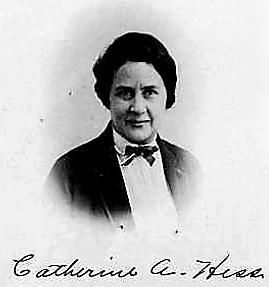
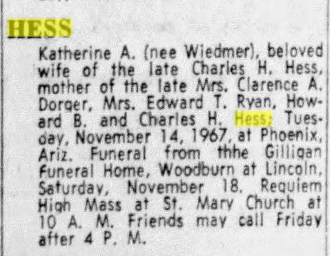
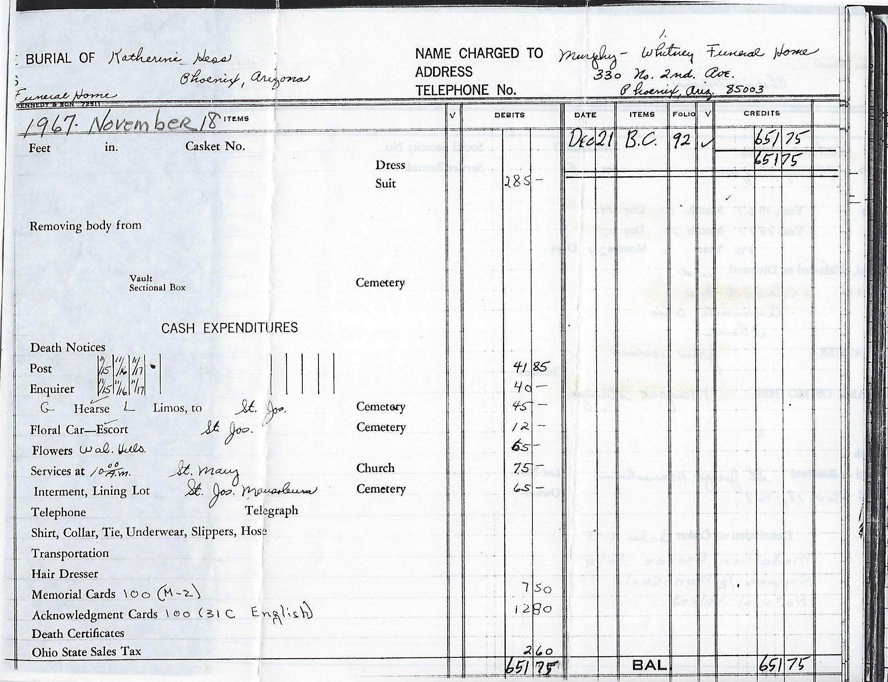
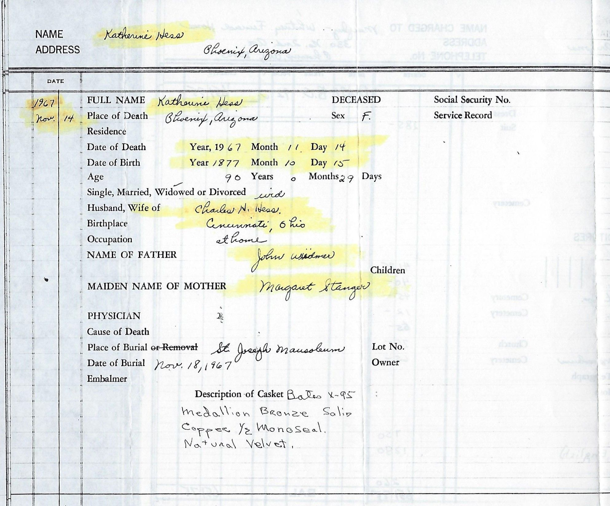
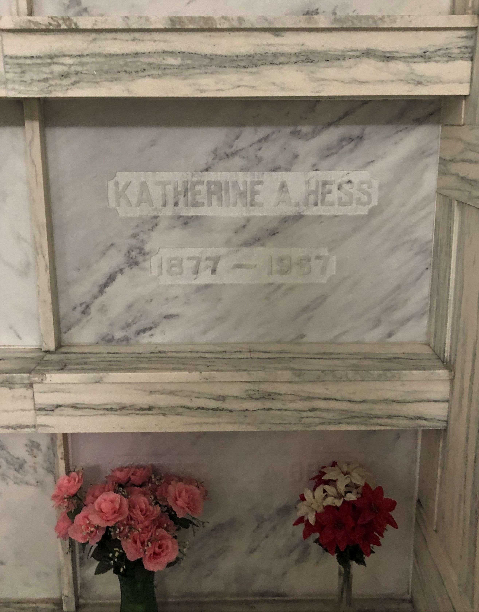
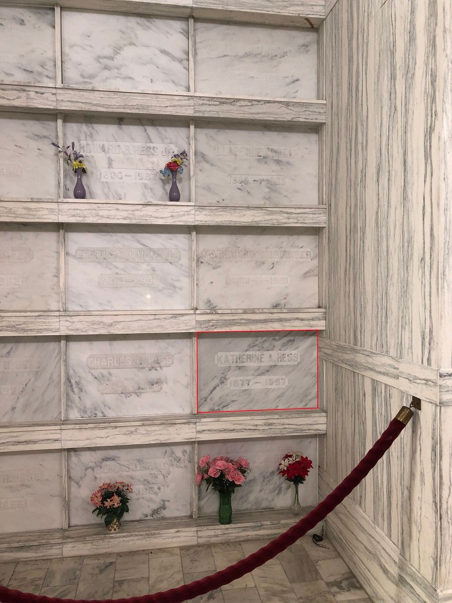

Katherine A. Hess
18 October 1877 – 14 November 1967
Quick Facts
Immediate Family
Parents
- Unresolved. One memorial text names John B. Winterhalter and Catherine Schlitz; another says John Wiedmer and Mary Stanger. No original record reviewed.
- Unresolved name identity: the linked spouse is Charles H. Hess; surname is Winterhalter, Winterholter, or Wiedmer across derivative sources.
Spouses
- Charles H. Hess (1869–1923)
Children
- Howard Bernard Hess (1899–1953)
- Marguerite A. Hess (later Dorger; 1898–1951)
- Charles H. Hess Jr. (1902–1938)
- Catherine Hess Ryan (1908–1967)
Siblings
- Not established from independently reviewed evidence; available sources do not identify Katherine’s siblings.
Family Relationship Notes
On Family Tree Sites
Person Archive
Life Timeline
1877
Birth reported 18 October in Cincinnati, Hamilton County, Ohio; memorial data.
1898–1908
Four Hess children are named in memorial-linked family data and later notices.
1923
Charles H. Hess death notice calls wife Katherine (née Winterholter).
1967
Died 14 November in Phoenix; funeral notice calls her Katherine A. (née Wiedmer).
Life Story
Katherine A. Hess is linked as wife of Cincinnati businessman Charles H. Hess and mother of Howard Bernard Hess. Her identity is supported by linked memorial family groups and period newspaper notices, but those sources do not agree on her maiden surname or parents.
The 1923 Charles Hess notices use “Winterholter”; the 1967 funeral notice uses “Wiedmer”; her Find a Grave title is “Winterhalter.” An embedded memorial text names John B. Winterhalter and Catherine Schlitz, while another gives John Wiedmer and Mary Stanger. Until an original record bridges these forms, this profile deliberately uses the neutral name Katherine A. Hess.
Photo Gallery






Sources and Evidence
- Find a Grave memorial 129455596: dates, burial, spouse and derivative family links.
- Photo gallery: memorial image, 1967 funeral notice, burial record images and memorial-wall pictures.
- Charles H. Hess 1923 notice gallery: wife “Katherine (née Winterholter).”
- Howard Hess 1953 notice gallery: his mother identified as Mrs. Catherine A. Hess.
Research Notes and Open Questions
- Find original 1877 birth/baptism record, 1900/1910/1920 census images, marriage record to Charles, and 1967 death certificate to resolve identity and maiden name.
- Do not merge John B. Winterhalter / Catherine Schlitz with John Wiedmer / Mary Stanger without an identity bridge.
- Four Hess children appear in memorial records; the memorial family group is derivative and the 1923/1967 notices provide corroboration but some given-name/surname variants.
- The memorial-wall image carries multiple Hess names but proximity does not document kinship.
DNA
No DNA evidence reviewed for this profile.
Family Notes
Research notes, full citations, and downloaded records are in this person’s GitHub research-notes archive.
Research notes: Katherine’s GitHub archive.
Profile created 24 November 2026; surname and parentage conflict is intentionally unresolved.